Solved examples
Example 1:
Draw the structures of all the eight structural isomers that have the molecular formula \( C_5H_{11}Br \) . Name each isomer according to IUPAC system and classify them as primary, secondary or tertiary bromide.
Solution
\( CH_3CH_2CH_2CH_2CH_2Br \) 1-Bromopentane ( \( 1^{\circ} \) )
\( CH_3CH_2CH_2CH(Br)CH_3 \) 2-Bromopentane( \( 2^{\circ} \) )
\( CH_3CH_2CH(Br)CH_2CH_3 \) 3-Bromopentane ( \( 2^{\circ} \) )
\( (CH_3)_2CHCH_2CH_2Br \) 1-Bromo-3-methylbutane ( \( 1^{\circ} \) )
\( (CH_3)_2CHCHBrCH_3 \) 2-Bromo-3-methylbutane( \( 2^{\circ} \) )
\( (CH_3)_2CBrCH_2CH_3 \) 2-Bromo-2-methylbutane ( \( 3^{\circ} \) )
\( CH_3CH_2CH(CH_3)CH_2Br \) 1-Bromo-2-methylbutane( \( 1^{\circ} \) )
\( (CH_3)_3CCH_2Br \) 1-Bromo-2,2-dimethylpropane ( \( 1^{\circ} \) )
Example 2:
Write IUPAC names of the following:
-
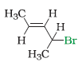
-
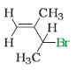
-
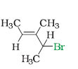
-
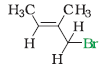
-
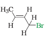
-
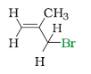
Solution
-
4-Bromopent-2-ene
-
3-Bromo-2-methylbut-1-ene
-
4-Bromo-3-methylpent-2-ene
-
1-Bromo-2-methylbut-2-ene
-
1-Bromobut-2-ene
-
3-Bromo-2-methylpropene
Example 3:
Identify all the possible monochloro structural isomers expected to be formed on free radical monochlorination of \( (CH_3)_2CHCH_2CH_3 \) .
Solution
In the given molecule, there are four different types of hydrogen atoms. Replacement of these hydrogen atoms will give the following
\( \begin{align} (CH_3)_2CHCH_2CH_2Cl \ \ \ \ \ \ (CH_3)_2CHCH(Cl)CH_3 \\\\[3pt]
(CH_3)_2C(Cl)CH_2CH_3 \ \ \ \ \ \ \ \ CH_3CH(CH_2Cl)CH_2CH_3 \end{align} \)
Example 4:
Write the products of the following reactions:
-
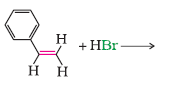
-
\( CH_3 - CH_2 - CH = CH_2 + HCl \ \rightarrow \)
-
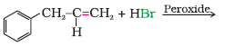
Solution
-

-
\( CH_3 - CH_2 - \underset{Cl}{CH} - CH_3 \)
-
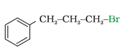
Example 5:
Haloalkanes react with KCN to form alkyl cyanides as main product while AgCN forms isocyanides as the chief product. Explain.
Solution
KCN is predominantly ionic and provides cyanide ions in solution. Although both carbon and nitrogen atoms are in a position to donate electron pairs, the attack takes place mainly through carbon atom and not through nitrogen atom since C - C bond is more stable than C - N bond. However, AgCN is mainly covalent in nature and nitrogen is free to donate electron pair forming isocyanide as the main product.
Example 6:
In the following pairs of halogen compounds, which would undergo \( SN_2 \) reaction faster?
Solution
It is primary halide and therefore undergoes \( SN_2 \) reaction faster.
As iodine is a better leaving group because of its large size, it will be released at a faster rate in the presence of incoming nucleophile.
Example 7:
Predict the order of reactivity of the following compounds in \( SN_1 \ and \ SN_2 \) reactions:
-
The four isomeric bromobutanes
-
\( C_6H_5CH_2Br, \ C_6H_5CH(C_6H_5)Br, \ C_6H_5CH(CH_3)Br, \ C_6H_5C(CH_3)(C_6H_5)Br \)
Solution
-
\( \begin{align} CH_3CH_2CH_2CH_2Br < (CH_3)_2CHCH_2Br < CH_3CH_2CH(Br)CH_3 < (CH_3)_3CBr (SN_1) \\\\[3pt] CH_3CH_2CH_2CH_2Br > (CH_3)_2CHCH_2Br > CH_3CH_2CH(Br)CH_3 > (CH_3)_3CBr(SN_2) \end{align} \)
Of the two primary bromides, the carbocation intermediate derived from \( (CH_3)_2CHCH_2Br \) is more stable than derived from \( CH_3CH_2CH_2CH_2Br \) because of greater electron donating inductive effect of \( (CH_3)_2CH \) - group. Therefore, \( (CH_3)_2CHCH_2Br \) is more reactive than \( CH_3CH_2CH_2CH_2Br \) in \( SN_1 \) reactions. \( CH_3CH_2CH(Br)CH_3 \) is a secondary bromide and \( (CH_3)_3CBr \) is a tertiary bromide. Hence the above order is followed in SN1. The reactivity in \( SN_2 \) reactions follows the reverse order as the steric hinderance around the electrophilic carbon increases in that order. -
\( \begin{align} C_6H_5C(CH_3)(C_6H_5)Br > C_6H_5CH(C_6H_5)Br > C_6H_5CH(CH_3)Br > C_6H_5CH_2Br(S_N1) \\\\[3pt] C_6H_5C(CH_3)(C_6H_5)Br < C_6H_5CH(C_6H_5)Br < C_6H_5CH(CH_3)Br < C_6H_5CH_2Br(S_N2) \end{align} \)
Of the two secondary bromides, the carbocation intermediate obtained from \( C_6H_5CH(C_6H_5)Br \) is more stable than obtained from \( C_6H_5CH(CH_3)Br \) because it is stabilised by two phenyl groups due to resonance. Therefore, the former bromide is more reactive than the latter in \( S_N1 \) reactions. A phenyl group is bulkier than a methyl group. Therefore, \( C_6H_5CH(C_6H_5)Br \) is less reactive than \( C_6H_5CH(CH_3)Br \) in \( S_N 2 \) reactions.
Example 8:
Identify chiral and achiral molecules in each of the following pair of compounds. (Wedge and Dash representations according to Class XI.
-
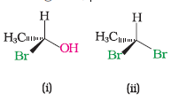
-
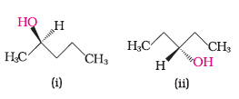
-
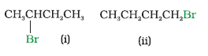
Solution
-
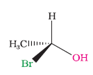
-
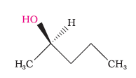
-
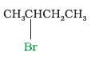
Example 9:
Although chlorine is an electron withdrawing group, yet it is ortho- , para-directing in electrophilic aromatic substitution reactions. Why?
Solution
Chlorine withdraws electrons through inductive effect and releases electrons through resonance. Through inductive effect, chlorine destabilises the intermediate carbocation formed during the electrophilic substitution.
Through resonance, halogen tends to stabilise the carbocation and the effect is more pronounced at ortho- and para- positions. The inductive effect is stronger than resonance and causes net electron withdrawal and thus causes net deactivation. The resonance effect tends to oppose the inductive effect for the attack at ortho- and parapositions and hence makes the deactivation less for ortho- and paraattack. Reactivity is thus controlled by the stronger inductive effect and orientation is controlled by resonance effect.